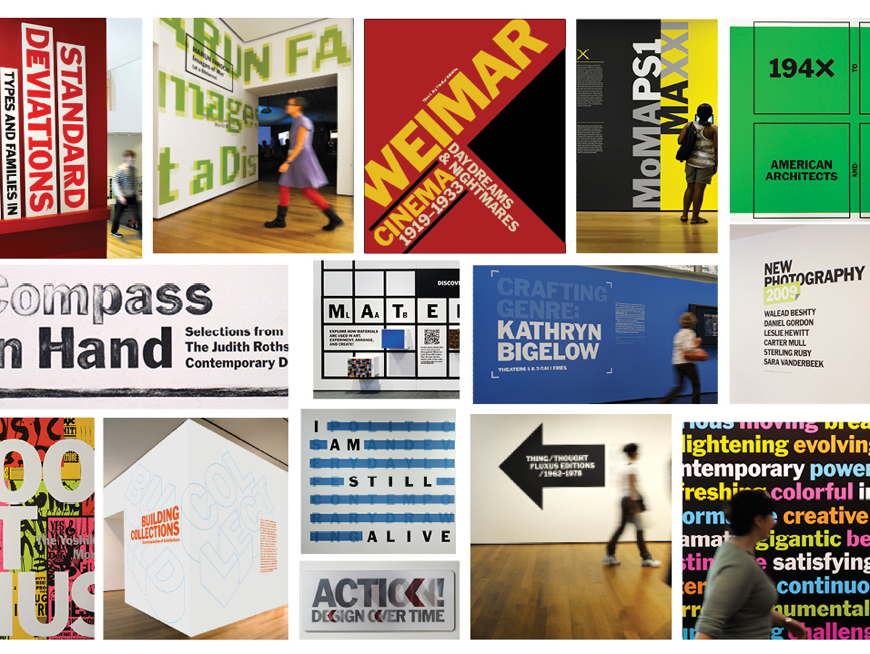
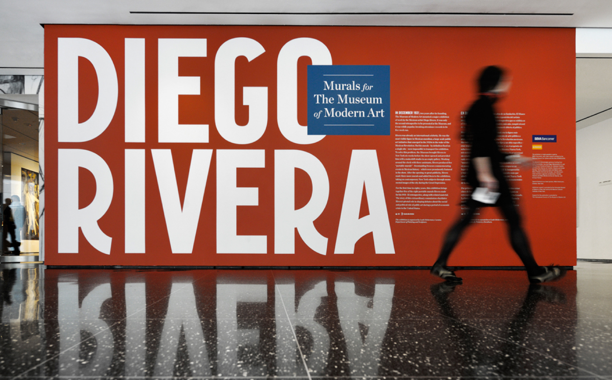
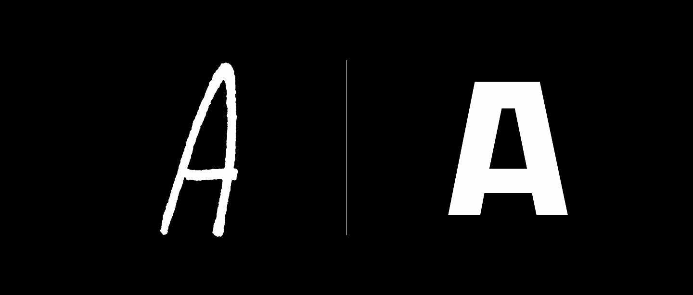
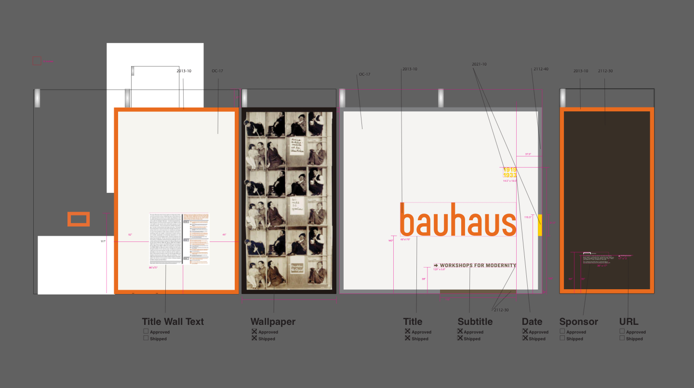
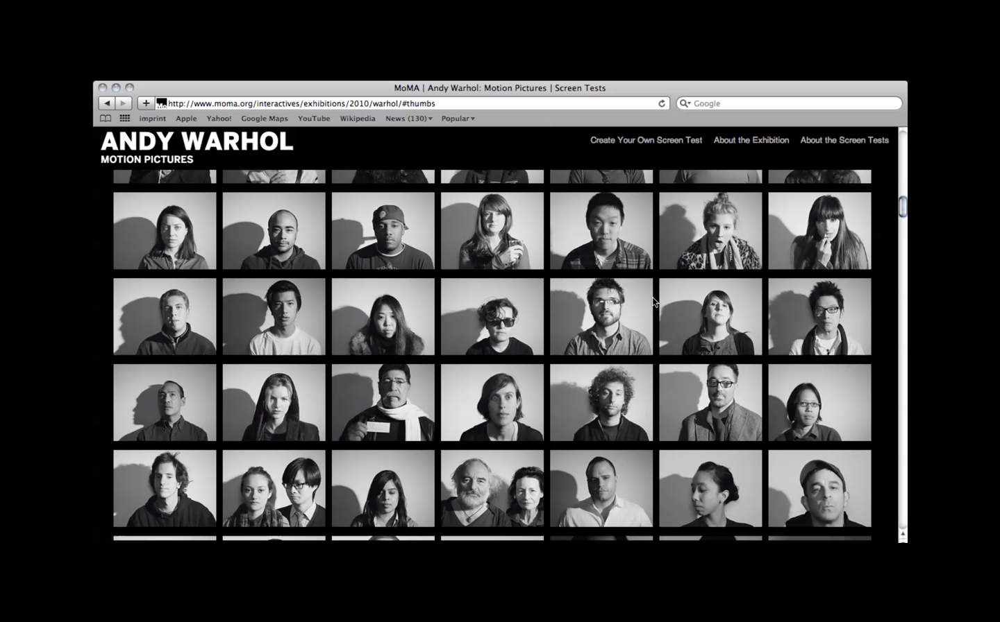

This work was completed with the amazing talent of The Museum of Modern Art's Marketing, Design, and Digital Media departments from 2009–2012. Kim Michell & Julia Hoffmann led the charge. Our studio consisted of Brigitta Bungard, Ingrid Chou, Sam Sherman, Inva Cota, Claire Corey, Althea Penza, Jesse Reed, Amanda Pastenkos, Reed Burgoyne, Joel Stillman, and so many more.
In 2008, Pentagram Partner Paula Scher took on a re-brand of The Museum of Modern Art¹ in New York City. She helped install her lead designer on the project, Julia Hoffmann², as Creative Director of the museum’s in-house studio. In an effort to further realize the project’s vision of a unified brand identity, the marketing design and exhibition design departments were merged and brought closer to the digital media group. I was hired by Hoffmann and CMO Kim Mitchell³ to help join the disciplines and bring both closer to digital fluency.
fig1.1 · Examples of Paula Scher's design system put to the test by the the Museum's marketing department.
The first task was to make Ms. Scher’s proposed design moves real, which, typical of her genius, were less prescriptive and more attitudinal. She created massive tension utilizing the MoMA logo vertically and smashing artwork and typography together in the ways only she could. We refined this idea through countless design challenges and the result was constant evaluation of the use of typography throughout the institution.
The museum originally printed its own materials and possessed a letterpress alphabet of Morris’s Fuller Benton’s Franklin Gothic No. 2. It became ubiquitous with the museum’s identity through it use in the fully name word mark by Ivan Chermayeff in 1964 and it’s use in the museum’s “MoMA” logotype refined by Matthew Carter in 2004. Later committed to digital font by the name of MoMA Gothic. It’s use in signage and museum materials was revived by our team as core to the institutional brand. But for content as vast as its catalogue we committed to a magazine metaphor for typeface use. The lobby (contents) and collection shows (departments) stuck with MoMA Gothic.
fig1.2 · Examples of MoMA Gothic used throughout the Museum's exhibition spaces.
While pushing and pulling a single typeface into a myriad of design solutions was a great deal of fun, we hit our limits. These limits were of course, curators. Special exhibitions needed to be even more special. And because many had to freedom to travel beyond the museum they required the freedoms to try have unique identities.
fig1.3 · Title wall for “Diego Rivera: Murals for The Museum of Modern Art” with letterforms inspired by 1930s New York where the works were created and originally displayed See images of this exhibition ↗
So long as these identities mixed well and had the same typographic attitude, we were content in having them be the "features" of our magazine metaphor. Our team found ourselves working closely with artists and artits'foundations to create unique typographic solutions for their shows.
fig1. · Examples of unique alphabets created for museum identities for Tim Burton ↗ (left) and Marina Abramović: The Artist is Present ↗ (right) by Ingrid Chou, Inva Çota, and myself.
An overlooked luxury of designing on staff for exhibitions is the enourmous lead time you have for title walls. My team was able to devour books on artists well before we began the work, as exhibitions are often planned years in advance. The result was Exhibition typography as expressive and varied as the content itself and always with a story to tell. And despite criticism throughout the halls, we created dramatic title walls that encouraged visitors to stage selfies.
fig1.5 · Title wall plans for Bauhaus 1919–1933: Workshops for Modernity
fig1.6 · Exhibition identity for Bauhaus 1919–1933: Workshops for Modernity, organized by Barry Bergdoll, The Philip Johnson Chief Curator of Architecture and Design, and Leah Dickerman, Curator, Department of Painting and Sculpture. I was told that both I.M. Pei and Steven Heller complimented my design, but I cannot confirm this. MoMA.org ↗
As visitors began to interact with title walls, we looked for ways to engage and connect before and after visits. At the time micro-sites were created for each exhibition containing lists of works and (somehow) organized and linked through MoMA.org. Working with curators and artists on identities allowed us to puch these microsites further into more meaningful interactive spaces.
An example of this was for a presentation of Andy Warhol's "Screen Tests"—short film portraits of completely still friends and celebrtities. The Warhol foundation would not let us use digital videos of the works online (though they arleady existed on YouTube). But it was 2011 (the year Snapchat was founded) and “we” were overready to share videos of ourselves online. We shared Warhol's fairly strict perameters (white background, one light source, cast shadow on wall) and created a site that allowed users to upload their own screen tests from (wait for it) Flickr! The result was a vast amount of strickly art directed user-generated content. Our curator noted: “Andy would have loved this.”
fig1.7 · Exhibition microsite for Andy Warhol Motion Pictures ↗ concepted by MoMA's marketing and digital media departments and developed by Stamen.
For more about these and tons of other MoMA projects please get in touch ↗
2012-2014 · Design & Direction, In-House